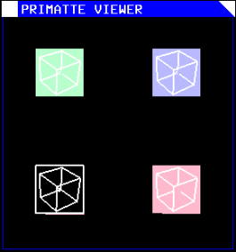
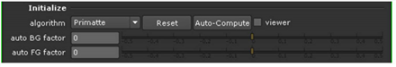
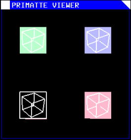

In the Initialize section, you can select which algorithm Primatte uses to calculate your keying result:
|  |
| Primatte algorithm dropdown menu. |
• Primatte - The Primatte algorithm delivers the best results and supports both the solid color and the complement color spill suppression methods. It is the algorithm that uses three multi-faceted polyhedrons (as described further down in the this chapter) to separate the 3D RGB colorspace. It is also the default algorithm mode and, because it is computationally intensive, it may take longer to render.
• Primatte RT - is the simplest algorithm and therefore, the fastest. It uses only a single planar surface to separate the 3D RGB colorspace (as described further down in this chapter) and, as a result, does not have the ability to separate out the foreground from the backing screen as carefully as the above Primatte algorithm. Other disadvantages of the Primatte RT algorithm is that it does not work well with less saturated backing screen colors and it does not support the complement color spill suppression method.
• Primatte RT+ - this is in between the above two options. It uses a six planar surface color separation algorithm (as described further down in this document) and delivers results in between the other two in both quality and performance. Other disadvantages of the Primatte RT+ algorithm is that it does not work well with less saturated backing screen colors and it does not support the complement color spill suppression method.
• Reset - Clicking this resets all of the Primatte properties to their initial values.
• Auto-Compute - This can be used as the first step in the Primatte operation. Its purpose is to try and do the first three steps of the Primatte operation for you. It tries to automatically detect the backing screen color, remove it, and do some clean-up on the foreground and background noise. If the clip was shot with an evenly lit, well-saturated backing screen, the Auto-Compute button leaves you with an image that may only need some spill removal to complete your keying operation. See Auto-Compute
• viewer - This opens a Primatte Viewer that displays a graphical representation of the Primatte algorithms and allows you to see what is happening as the various Primatte tools are used. It is a passive feature that has no adjustment capabilities, but it may prove useful in evaluating an image as you operate on it. See Primatte Viewer Tools.
When you select viewer, you are presented with a window that may look similar to one of these images (depending on which Primatte algorithm you have selected).
|
|
|
| Primatte algorithm. | Primatte RT+ algorithm. |
|
 |
|
| Primatte RT algorithm. | |
The different algorithms are described in more detail in a later section of this chapter, see The Primatte Algorithm . For a description of the Primatte viewer tools, see Primatte Viewer Tools.
|
|